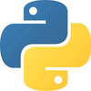

Compétences :
Bienvenue sur mon Portfolio. Je m'appelle Clément Arki et je sus en 2ème année de BTS SIO (services informatiques aux organisations) option SLAM (solutions logicielles et applications métiers). Je développe des logiciels et des sites web liée avec la base de donnée (SQL).
Compétences logiciels IDE (informatiques) :
- 
Expériences professionnelles :
- 2013 : Stage dans le secteur alimentaire, ZaacMarket à Joinville-le-Pont (94340) :
- Réception des livraisons de stock
- Mise en rayon
- Rotation des stocks
- Réceptions des livraisons de colis
- Livraison à domicile
Diplômes et Formations (Etudes) :
- 2020 : BTS SIO (Services informatiques aux organisations) option SLAM au CNED (Centre national d'enseignement à distance) à Poitiers (86000)
- 2017 : Première année BTS CG (Comptabilité Gestion) au Lycée ORT Daniel Mayer à Montreuil (93100)
- 2017 : Diplôme National du Baccalauréat général Economique et Social (ES) spécialité Mathématiques
- 2014 : Diplôme National du Brevet des collèges mention Assez Bien au Collège Henri Rol-Tanguy de Champigny-sur-Marne (94500)
Centres d'intérêts (loisirs) :
- Pratique d'un sport : 1 an de Tennis de Table au club Champigny-sur-Marne
- Voyages : Espagne, Italie, Perpignan, Nice , Autriche
- Visites de musées, cinéma, lecture (Manga, BD)
- Janvier 2018 : Participation au HACKATHON OPEN'ORT 2018 au sein du lycée (sujet liée à la médecine)